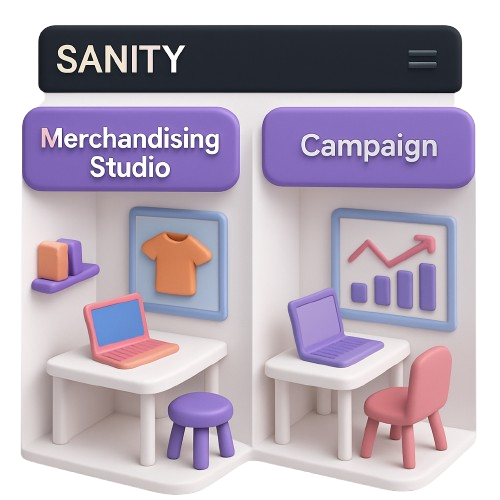

PUZZLE

Current Situation
Teams struggle with rigid systems.
Businesses need to move fast.
Merchandisers, Editors and Developers are frustrated
as they want speed, creative control and flexibility.
Why the Old Way Fails?
“I don’t even want to use it.” — Marriott Merchandiser
Most CMS platforms promise flexibility but gives you readymade components —
rigid, restrictive and brand-diluting.
Editors, merchandisers, and marketers are left
waiting, not creating.
What Do We Really Need?
How do we move beyond content operations to content being
the OS that drives your enterprise?
How do we empower
non-technical teams to create
freely — without bottlenecks?
How can we create a system that is
flexible, resilient, and composable
— one that evolves with us?
Sanity v/s Contentstack v/s Contentful
| Features | Sanity | Contentstack | Contentful |
|---|---|---|---|
| Developer Experience & Customization |
|
|
|
| Content Modeling |
|
|
|
| Real-Time Collaboration |
|
|
|
| Preview |
|
|
|
Sanity v/s Contentstack v/s Contentful
| Features | Sanity | Contentstack | Contentful |
|---|---|---|---|
| Query Language |
|
|
|
| Performance |
|
|
|
| Local Development & Version Control |
|
|
|
| AI Integration |
|
|
|
Qualitative Analysis
Faster dev cycles
Custom storefront workflows
Real-time team editing
Seamless product data queries
Optimized storefront performance
Scales with business growth
The Answer: SFCC PRO
Freedom Beyond CMS
With Sanity, we don't just edit content.
We create components themselves —
tailored to brand, workflow, and imagination.
Teams are no longer boxed in, they're free to build
extraordinary experiences.
Proof in Action
Dynamic Landing Pages
Components become our puzzle pieces.
Merchandisers can rearrange store layouts themselves.
What once took 10 days is now
possible in 1 day.
Visual Editing with Live Preview
Editors can see changes instantly — no guessing, no waiting.
Like trying on clothes before buying.
AI-Powered Content Organization
Drop in messy data, and Sanity organizes it automatically.
"Like hiring an intern who never makes mistakes — and works
instantly."
AI-Powered Product Content
No more blank fields: AI instantly
fills titles, descriptions, attributes, and images.
Always on-brand: consistent tone and
quality across every product.
Real-Time Bi-Directional Sync
Any change in Sanity instantly updates SFCC and the live site.
Eliminates manual efforts and
reduces errors.
Dedicated Workspaces
Grouped fields for better navigation.
Dedicated workspaces for
marketing campaigns and
merchandising.
Merchandisers will want to create instead of resisting.

SFCC PRO SUPERPOWERS
Merchandiser →
Director of the Storefront
Product Manager →
Strategist, not Firefighter
Content Director →
Storyteller, not Ticket Writer
Scrum Master →
Leader of Meaningful Projects
And I transformed from being the blocker to the builder of
possibilities
What Makes SFCC Pro Different
We are not just another CMS
We give teams SUPERPOWERS:
- Freedom to create
- Courage to experiment
- Tools to build the extraordinary
"For years, this puzzle piece was stuck in a box. But now…
everyone can move the pieces, create new pictures, and tell new
stories. Not in weeks. Not after endless back-and-forth. But
instantly."